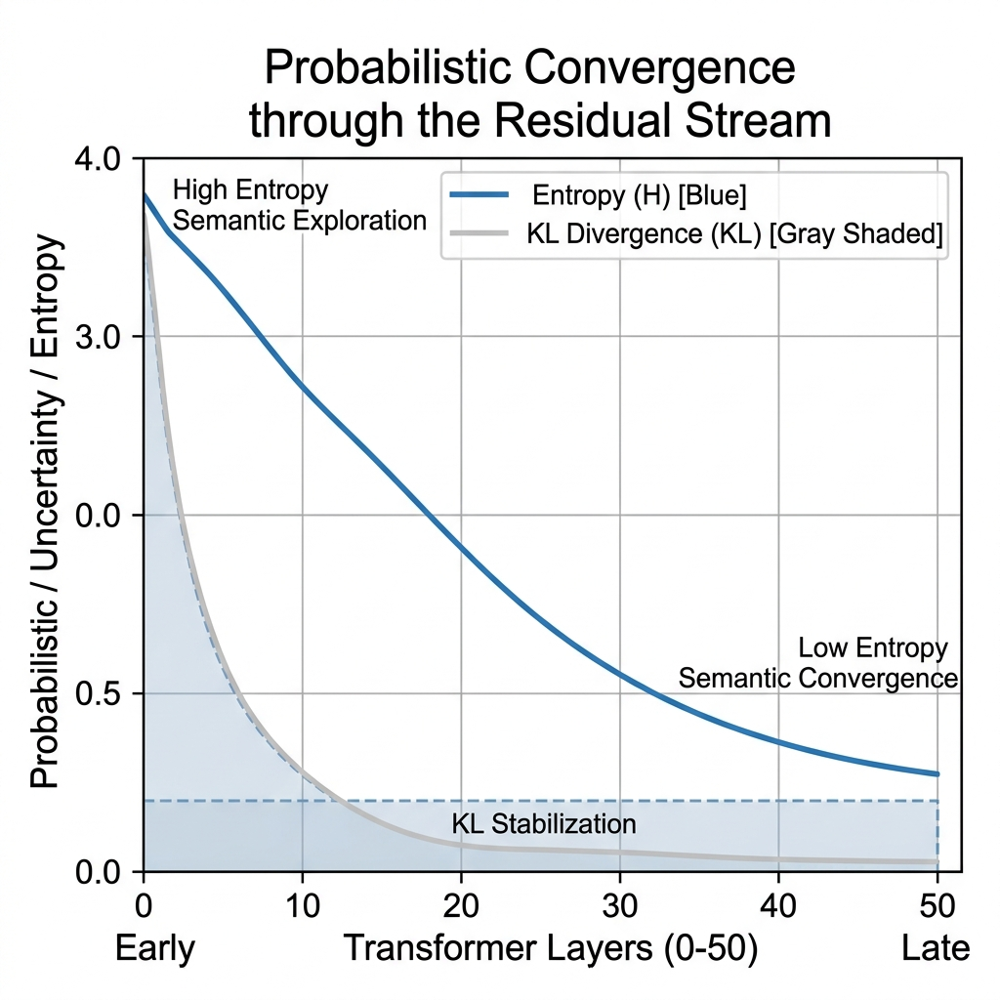
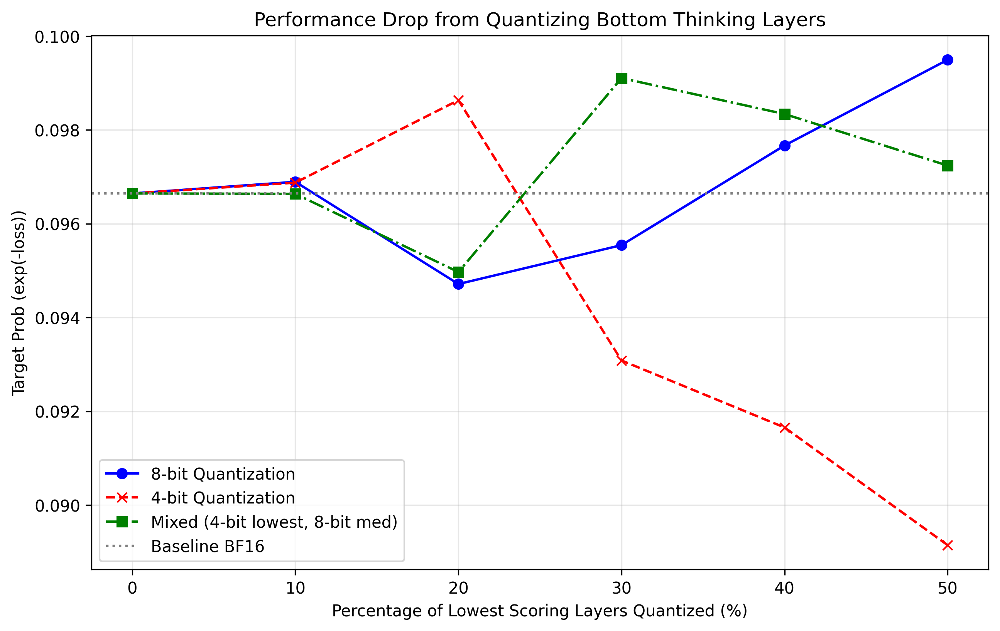
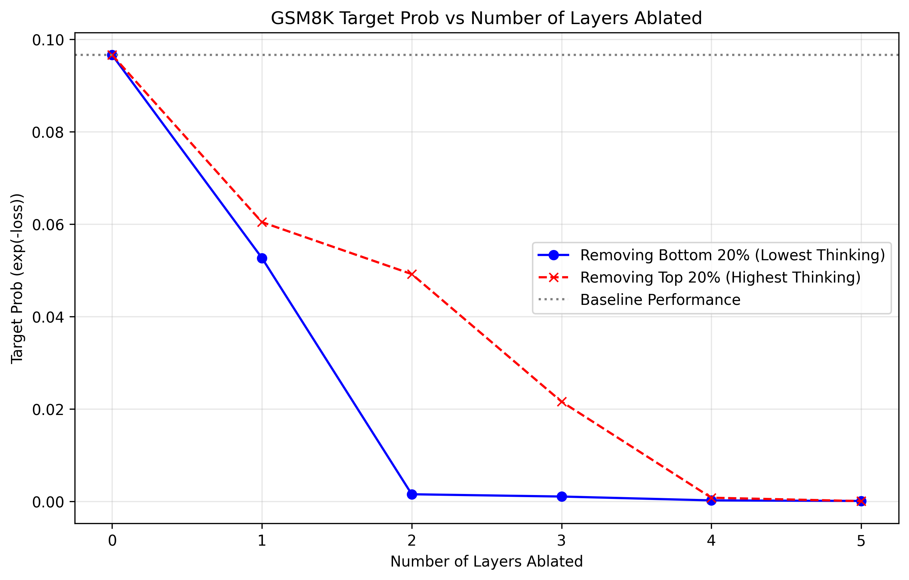

Large Language Models (LLMs) have demonstrated exceptional capabilities in textual inference, but their deployment on edge devices is limited to high computation and memory overhead. To address this, we provide LLM-QRP (Quantization for Reasoning Preservation), a layer-aware mixed-precision quantization framework which is designed to reduce a model’s size while preserving its reasoning performance. Unlike uniform post-training quantization methods, LLM-QRP identifies and preserves critical "thinking" layers by analyzing the model’s layer-wise logit evolution and entropy dynamics across transformer blocks. These signals are combined into a unified reasoning importance score, ranking layers according to their inference contribution. We then apply an empirical mixed-precision strategy that allocates higher precision to high-scoring layers and lower precision to redundant layers, optimizing the accuracy to compression trade-off. Experiments on multiple small models were trained, and evaluation on GSM8K and TruthfulQA shows that LLM-QRP significantly reduces VRAM usage while maintaining almost near-baseline reasoning performance, outperforming standard uniform 4-bit quantization. Our results demonstrate that layer-wise quantization guided by internal reasoning signals can enable deployment of LLMs on resource-constrained hardware without significant degradation in a model’s reasoning ability.
Large Language Models (LLMs) have qualitatively transformed various domains of artificial intelligence. A core advantage of local LLMs is the benefits of on-device use. It serves as an alternative pathway for LLMs to operate effectively offline, without intermediate delays from API or cloud calls, and remains beneficial for real-time, offline applications involving autonomous vehicles, financial processing, and applications requiring a fine-tuned model. However, as a wise man once said, "With great model size comes a great compute cost." For instance, Qwen3.5, containing 0.8B parameters at FP16, has a memory footprint of 1.8 GB, which can adequately run inference on edge devices.
In post-training-quantization (PTQ), multi-step reasoning tasks are compromised first, leading to degradation in the model’s ability to reason and think. Quantization-aware training suffers from high infrastructure costs, making compute and model training quite expensive. Recent advancements in quantization provided by GPTQ and LLM-AWQ do provide mixed-precision quantization; LLM-AWQ optimizes for which weights to preserve instead of identifying layers that actually perform reasoning.
To address these challenges, we propose LLM-QRP, a layer-aware quantization framework that explicitly targets the preservation of reasoning capability in small LLMs. LLM-QRP leverages two primary metrics: Self-Logits Evolution Decoding (SLED) and Layer-wise Entropy Profiling, which are aggregated into a single-layer normalized score that ranks layers according to their reasoning contributions.
We observe that not all layers contribute equally to the model’s final response, and there exists an optimal distribution of quantized layers such that the model retains most of its efficacy whilst maintaining a significantly smaller memory footprint. The intuition behind this is to find the "thinking layers."
Modern large language models are architecturally composed of N model layers. To measure the "thinking" occurring between adjacent layers, we calculate the KL Divergence. The core intuition is that a "Thinking Layer" is not just one that changes, but one whose change aligns semantically with the final output. The SLED score is the Cosine Similarity between the masked gradient and masked divergence, providing a score between [0, 1] with an emphasis on KL divergence.
The concept of entropy is applied to gauge an LLM’s uncertainty as it moves through the residual stream, thereby defining its probabilistic convergence. Ideally, the layers transition from high-entropy (semantic exploration) to low-entropy (probabilistic convergence) as the model converges upon a thought.
Rather than measuring raw entropy, this paper studies how sensitive a model’s final entropy is to changes in precision from each layer, or Structural Entropy Sensitivity. The layers with the highest quantization sensitivity are the most vital to the inference process.

We employ a Mixed-Precision Quantization (MPQ) framework to convert the reasoning importance scores achieved through layer ablation and SLED/entropy analyses into a tangible structure for model deployment. After the reasoning importance scores are computed, the bottom percentile is assigned to FP4, the middle percentile to INT8, and the remainder preserved in BF16, or full precision. This algorithm runs to find a Pareto Front for quantization.

To verify whether layers assigned higher "thinking scores" are truly more important for reasoning, we utilized a layer ablation-based approach. We found that removing 20% of the top layers resulted in a significantly greater performance decline than removing the bottom 20%, validating our reasoning scores.

LLM-QRP yields a mean efficiency gain of over 67%, reinforcing how retaining precision on reasoning-dense layers can achieve a more optimal utility-to-size density.
| Model | VRAM Reduction (%) | Reasoning Retention (%) | Efficiency Gain (%) |
|---|---|---|---|
| SmolLM2-135M | 50.0 | 92.1 | +91.3 |
| Qwen2.5-0.5B | 53.1 | 113.9 | +68.2 |
| LFM2.5-350M | 56.3 | 85.2 | +42.5 |
| Average | 53.1 | 97.1 | +67.3 |
Table 1: Mixed-precision quantization performance across model families. VRAM Reduction denotes memory savings relative to BF16.
In this paper, we propose LLM-QRP, a layer-based quantization framework for the preservation of reasoning in small models for use on edge computing. Through the compilation of SLED and structural entropy sensitivity, we discovered the layer subsets most vital to reasoning in low-parameter LLMs, verifying this with an ablation study and benchmarking. LLM-QRP provides the blueprint for a strategy to improve the deployment of reasoning-capable models on edge hardware and limited-resource environments, creating a buffer between strong model intelligence and hardware requirements.
@inproceedings{iruku2024llmqrp,
title={Quantization for Reasoning Preservation in Small LLMs},
author={Iruku, Roshan and Dhillon, Gurshaan},
year={2024}
}